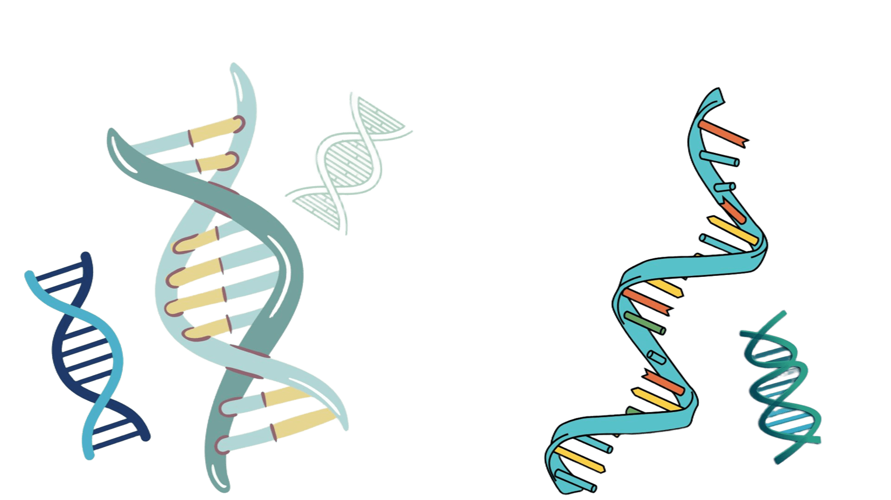

ÁCIDOS NUCLEICOS
Os ácidos nucleicos são macromoléculas que armazenam, transmitem e ajudam a utilizar as informações genéticas.
O que são ácidos nucleicos?
São macromoléculas formadas por unidades menores chamadas nucleotídeos. Os dois principais tipos são o DNA e o RNA.
Funções
DNA: armazena as informações genéticas dos seres vivos e transmite essas informações durante a reprodução celular e a hereditariedade.
RNA: participa da utilização das informações contidas no DNA, principalmente na produção de proteínas.
DNA e RNA
| Característica | DNA | RNA |
|---|---|---|
| Açúcar | Desoxirribose | Ribose |
| Estrutura comum | Dupla hélice | Cadeia simples |
| Bases | A, T, C e G | A, U, C e G |
| Função | Armazenar informações genéticas | Participar da produção de proteínas |
A = adenina; T = timina; C = citosina; G = guanina; U = uracila.

Aplicação na ciência
O DNA é utilizado em testes genéticos para investigar parentesco e auxiliar na identificação de indivíduos. Os ácidos nucleicos também são estudados para compreender doenças hereditárias e desenvolver métodos de diagnóstico.Você sabia?
O DNA presente no núcleo de uma célula humana mede aproximadamente 2 metros de comprimento quando esticado. Mesmo assim, consegue ficar dentro do núcleo porque está bastante compactado.Fonte: MAGALHÃES, Lana. DNA: o que é e sua estrutura explicada. Toda Matéria. Acessar fonte.
Saiba mais
Embora DNA e RNA tenham funções diferentes, ambos são formados por nucleotídeos. Cada nucleotídeo possui um açúcar, um grupo fosfato e uma base nitrogenada.